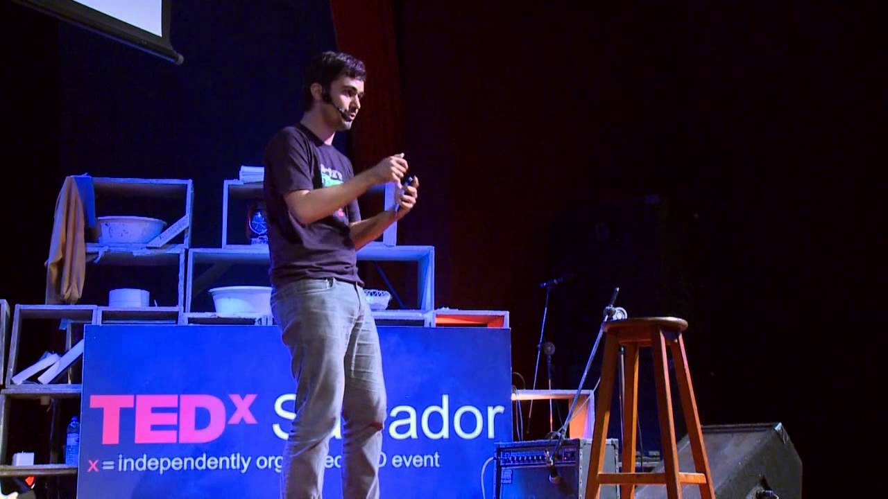
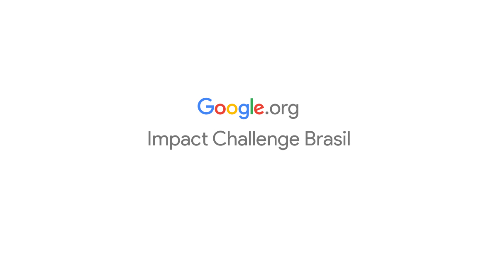
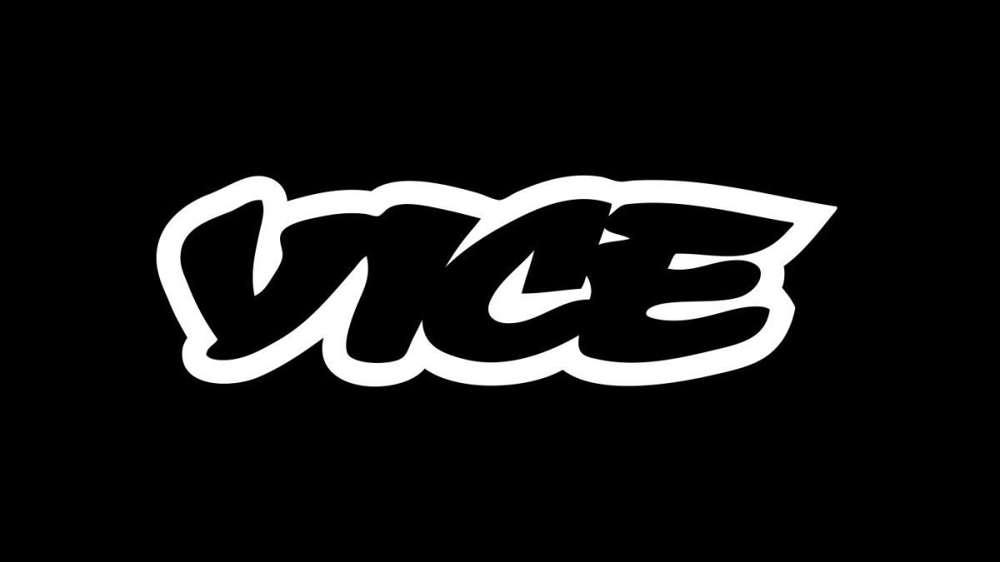

Recognition
Awards, programs, residencies and press.
What others have said and decided about my work, from 2006 to today.
Awards, programs and residencies
Claude for Open Source Program, Anthropic, for Jandig.
I was invited by the United Nations to the OSPOs for Good Symposium.
Mozilla Open Source Support Award, for Jandig.
Software Livres Culturais award, from the Brazilian Ministry of Culture, for Jandig.
I sat on the selection committee of ProAC Expresso LAB for games, virtual reality and augmented reality, São Paulo State.
Hacker residency, Red Bull Basement.
Google Impact Challenge Brazil, for Rede InfoAmazonia.
Artist residency at Hangar, Barcelona (Chronica Mobilis).
Nimk/Vivo Arte.mov artist residency (Brazil/Netherlands).
CEMEC Creative Entrepreneurs award.
Estúdio Livre Collaboration Award.
In the press and on video

TEDx Talks, 2013 Watch my TEDx Salvador talk, "Redescobrindo Games" (video, in Portuguese)
Google Impact Challenge Brazil, 2014 See Google's page for Rede InfoAmazonia, one of the projects it funded (in Portuguese)
VICE, 2011 Read the profile of memeLab and of my work with open source- Mozilla Blog, 2019 Read Mozilla's review of its 2018 open source awards, which lists Jandig
- Circuito Sesc de Artes, 2019 Article on Jandig's tour of São Paulo state, "Realidades autônomas temporárias" (no longer online)
- IJNet, 2013 Read the report on the Buenos Aires Media Party, where I showed MapPress
- Revista Select, 2012 Read the magazine article "Do artista ao articulador" (in Portuguese)
- Revista Select, 2011 Read the magazine article on Jandig, "Jandig #CulturaDigitalBR" (in Portuguese)
- Correio Braziliense, 2010 Full-page interview with me, "Brasil investe pouco em softwares livres" (print only)